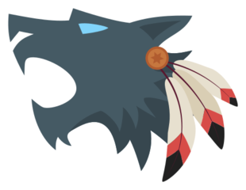

Roles
- Villager
- Doctor
- Bodyguard
- Tough Guy
- Red Lady
- Gunner
- Jailer
- Priest
- Marksman
- Seer
- Aura Seer
- Spirit Seer
- Seer Apprentice
- Detective
- Medium
- Mayor
- Witch
- Avenger
- Beast Hunter
- Pacifist
- Grumpy Grandma
- Cupid
- President
- Cursed
- Sheriff
- Flower Child
- Forger
- Loudmouth
- Fortune Teller
- Werewolf
- Alpha Werewolf
- Wolf Pacifist
- Wolf Seer
- Wolf Shaman
- Junior Werewolf
- Werewolf Berserk
- Nightmare Werewolf
- Guardian Wolf
- Kitten Wolf
- Shadow Wolf
- Sorcerer
- Fool
- Headhunter
- Serial Killer
- Arsonist
- Bandit
- Bomber
- Corruptor
- Cannibal
- Zombie
- Sect Leader
- Illusionist
- Accomplice
There are currently 53 roles in the Online version of the game:

- The Villager is part of the village team. The villager has no abilities, and it can only vote and talk during the day. It is present in Ranked Mode. The Villager is also called Forkman . The game will show before starting:
You are a regular villager without any abilities. You belong to the village team.
- Each night the Doctor can select one player to heal. If this player is attacked by the Werewolves, they don't die in that night. The Doctor can heal every night that they are alive. The Doctor cannot heal themselves.
- Each night the Bodyguard can select one player to protect. They also automatically protect themselves. If the Bodyguard or the player they are protecting gets attacked, they will survive. However, if they are attacked again the bodyguard will die.
- Each night, the Tough Guy can select one player to protect. If that player or the Tough Guy gets attacked, the tough guy sees the role of the weakest werewolf and will live until the next night before dying. This enables them to provide any information they found about the werewolves.It is likely they will be dead by the time the village has won.
- At night the Red Lady can visit another player. If the Red Lady gets attacked when visiting another player, she won´t die. However, if the Red Lady visits a Werewolf or Solo Killer, she will die. If the Red Lady visits a player that is killed, both die. This role is the same as the Villager during the day.
- The Gunner has no special abilities during the night. During the day, the Gunner has two bullets that it can use. After they use the first bullet, the shot is so loud that everyone knows who the Gunner is. The bullets will kill a player no matter what protection they have. They can only use one bullet per day.
- The jailer can select one player to jail each day. That night, the jailer can talk to their prisoner privately. During this time, that jailed player cannot use their abilities. The prisoner also cannot send roses. That player won't be able to use emojis in jail. Once every game, they can execute their prisoner. The prisoner can't be killed by direct attacks neither on that night, but it can get killed by bomber or arsonist if they were bombed or doused a previous night. When jailed, the person being jailed will have cell bars over their avatar. This can only be seen by the target and the Jailer, and if they are a werewolf or zombie, the other werewolves (or zombies) will see. In special custom game modes (all random roles), there can only be one jailer per game.
- Once per game, the Priest can throw Holy Water at one player. The Priest can only do this during the day. If the water is thrown at a Werewolf, they will die (excluding Sorcerer). If that player is not a Werewolf, the Priest dies. The Priest cannot kill Solo Killers.
- At night, the Marksman marks a player as a target. After the next day, they can choose to kill or change the target. If they choose to change it, they need to wait another night to be able to shoot. Similar to the priest, if the Marksman tries to kill a villager, the shot will backfire and kill the Marksman. Similar to the gunner, he has two arrows. The Marksman can also shoot during the day time.
- Each night, the Seer can see the role of one player. The next day the seer will then tell the gathered information to the players. If it is a good role, the seer may just tell the players that the role checked is good to avoid the checked player being killed at night.
- Each night the Aura Seer can select one player. They can see whether this player is good, evil or unknown. If the player is good, they are on the village and if they are evil they are on the Werewolves. The Wolf Shaman's enchantment can make an Aura Seer see a player as evil, regardless of their actual aura. The Illusionist's disguise can make an Aura Seer see a player as Unknown.
- Each night, the Spirit Seer can select two players. At the beginning of the next day, they will be informed if either of those two players killed last night. A blue spirit will be shown if the two selected players didn't kill anyone last night. A red spirit will be shown if at least one of them killed. If nobody killed the previous night, the Spirit Seer won't have information since all players will appear blue. If the Spirit Seer is killed during the night, they won't see their information unless they're revived. If the werewolves killed, then all werewolves will appear red the following day, regardless of whether an individual werewolf voted or not. Similarly if the Bandit or Accomplice killed, both of them will appear red, even if one of them didn't vote. If a villager such as Witch, Jailer, Beast Hunter, Marksman or Avenger kills someone at night, they will also appear red to the Spirit Seer the next day. Furthermore, if Marksman tries to shoot a villager at night and dies as a result, that villager will appear red the next day, because their innocence has killed Marksman. If the Corruptor killed, they will appear red the following day because they killed after the day ended. If the Illusionist killed, they will appear blue because they killed during the day, not at night. The Sorcerer doesn't appear red because they cannot kill.
- The Seer Apprentice starts out as an ordinary villager with no special powers. However, if the Seer dies they will become a new Seer. If the original Seer is revived, the Seer Apprentice will remain a Seer.
- Each night, the detective selects two players. They will then see immediately if these two players are on the same team or not. If the players are on the same team, the = symbol will be shown. If they are on different teams, the ≠ symbol will be shown. The possible teams are: Village, werewolves, Fool, Headhunter, Serial Killer, Arsonist, Bomber, etc. Random Voting roles and Solo Killers are all in their own different solo teams. The detective's information can be manipulated by Wolf Shaman. If a shamaned villager is checked against another villager, they will appear to be in different teams due to the enchantment.
- During the night, the Medium can talk (anonymously) with dead players. Once per game, they can revive a dead player. If the Medium selects a player to revive but dies midway through the night (from bomber, witch, etc.), that player will still be revived.
- Once during the game, the Mayor can reveal their role to the village. This will make their vote count as double for the rest of the game. If the Pacifist reveals the Mayor before the Mayor reveals them self, they will still have one vote until they announce it. If the Mayor reveals themself, and is later turned into a Zombie, the Mayor will have one vote.
- The witch has two potions called elixir and poison. Each can be used only once. The elixir potion protects any player that gets hit by the werewolves or Solo Killers (Excluding Arsonist & Bomber). If they are not attacked the elixir is not used. Meanwhile, the poison potion can kill any player at night except for on the first night.
- The Avenger can select a player to kill with them when they die. They don't have any other ability and they win with village. They can select this player at any time, except the first night. This is to prevent random killing. If the Avenger commits suicide, the player they chose will not die.
- At night, the Beast Hunter can place their trap on any player. This trap will activate the following night and will kill the weakest werewolf if the player is attacked. If the trap is moved, it will not activate until the following night. The Beast Hunter can place their trap on themselves. The Beast Hunter’s trap cannot kill Corruptor, Zombie, Serial Killer, Cannibal or Sect Leader, but the Beast Hunter's trap can still prevent those roles from killing the player you placed trap on. The trap can prevent all kind of attacks (including Arsonist’s attack) except Bomber’s.
- The Pacifist has no special night abilities. However, during the day the Pacifist can reveal a player's role. They can only do this once per game. Once the Pacifist reveals the player, the village cannot vote that day.
- After the first night the Grumpy Grandma can select one player that cannot talk or vote during the next day.
- On the first night, the Cupid selects 2 players to become a Love Couple. These players are now loyal to each other and not their original team (although the players can still win with their original team). If one of these players dies, the other will die as well. As Cupid, you cannot win with your Love Couple if you become a Zombie or Accomplice.
- At the start of the game everyone knows who the president is. If the president dies, the village automatically loses (Solo killers, Solo converters and Werewolves win). The game will not end if the President commits suicide. Unlike any other roles. The President is immune to Arsonist's gasoline dousing, Bomber's bomb planting, Corruptor's glitching, Illusionist's deluding, conversions, avenging and love couples.
- The Cursed begins the game on the village team. It is loyal to the village. If the cursed is attacked by the werewolves, it does not die. Instead, it becomes a regular Werewolf. If he is not bitten, the seer sees him as Cursed and the Aura Seer sees him as good. If he gets bitten by the werewolves, the seer sees him as a werewolf. The cursed can also be protected from the bite. Doctor, Bodyguard. Beast Hunter and Jailer can protect him at night.
- During the night, the Sheriff can select someone to watch. If that player dies during the night, during the day you will uncover two possible suspects who might have killed that player (one of them is the killer).
- Once during a game, the Flower Child can protect a player from being lynched by the village during the voting period of Day. They can protect themselves. Flower Child cannot be the headhunter's target. If both Flower Child and Guardian Wolf protect the same person, only Flower Child's ability will be used. Flower child can be useful in shadow werewolf games to protect seer or other seers to be protected from lynching.
- You can forge two shields and then a sword. Forging takes one day and each new item must be given to another player before forging the next once. Each shield will save a player once from being attacked at night. The sword can be used to kill another player.
- The Loudmouth can select a player. That player's role will be revealed when the Loudmouth dies.
- In each game you have 2 cards to give to other players. The players you give cards to can use these cards to reveal their roles. When Fortune Teller selects someone, they will receive the card immediately and can use it every time. Fortune Teller can give cards whenever they want. Doesn't have to give on the first night. However, if Fortune Teller Dies, Selected People will still get their card and can use them.
- Each night the Werewolf can vote on a player to kill and talk with the other Werewolves. Though it is the most basic role of the wolf team, the werewolf still provides essential support to its team when played well. A bitten Cursed and a player converted by a Kitten Wolf are also a Werewolf.
- The Alpha Werewolf has the same abilities as a regular Werewolf and can vote on one player to kill each night. However, when the Alpha Werewolf votes on a player to kill during the night, his vote counts twice.
- Once per game The Wolf Pacifist can reveal the role of a player to everybody and prevent anybody from voting during that day. The Wolf Pacifist cannot reveal other Werewolves.
- Each night the Wolf Seer can see the role of one player. They can talk with the other Werewolves and provide any information they found. However, the Wolf Seer cannot vote on a player to kill unless they resign their ability to see roles. If they are the last Werewolf alive they instantly resign their seeing ability. The Wolf Seer can speak with the wolves while the sorcerer can not.

- At night, the Wolf Shaman can talk and vote with the other werewolves. During the day, the Wolf Shaman can enchant another player. This will make that player appear as a Wolf Shaman to the Seer, Aura Seer and Detective for the next night.
- Each night the Junior Werewolf can vote on a player to kill like a regular Werewolf. They can also select one player to die with them. They can select this player during any phase of the game. The Junior's selected player will not die if they commit suicide. The Junior Werewolf can be very useful to the Werewolf team as a whole, even in death. The ability to kill another player upon death can be strategically used to eliminate important village roles.
- Once per game, the Werewolf Berserk can announce a Werewolves 'frenzy' during the day. If during the night of the frenzy their target is protected, all protectors of the victim will die, along with the victim. On the night the frenzy is activated, a horn will appear in the middle of the screen. A horn sound effect will also play. Contrary to belief, if the Werewolf Berserk dies during the day, and the "frenzy" was activated before they died, the "frenzy" will still be activated.
- Twice during the day in a game, the Nightmare Werewolf can decide to put a player to sleep for the next night. This means that the sleeping player cannot use their role abilities the night after they were put to sleep.
- During the day, the Guardian Wolf can once per game protect a player from being lynched by the village during the voting period.
- The Kitten Wolf can choose a player to convert a player to the Werewolves team. If this player is part of the Village, they will be converted into a regular Werewolf. If not, they will remain on their team. He can use his ability once. His ability can be negated by protective roles such as doctor.
- The Shadow Wolf has the same abilities as an ordinary werewolf and can vote for a player to kill each night. However, once per game, the Shadow Wolf can double your team's votes during the day, while hiding all votes.
- Each night the Sorcerer can see a player's role. Unlike the Wolf Seer, it cannot see the other Werewolves' roles nor talk to them. It can however, find out who the other Wolves are by seeing their role. The Priest's Holy Water cannot kill the Sorcerer. It is also important to note that when a wolf seer checks a player, other werewolves can immediately see the role of the checked player. Sorcerer checked people will not be shown to other werewolves so some sorcerers pretend to be seers.
- The Fool has no special abilities besides talking and voting during the day. The Fool wins the game if they are lynched by the village.
- The Headhunter has no special abilities. On the first night of the game, a random villager will be assigned as their target. They win if the village lynches their target during the day. If their target dies before the Headhunter dies, in a way other than being lynched, then the Headhunter becomes a regular villager and wins with village. A target icon will be shown on the Headhunter's target.
- Each night the Serial Killer can kill one player. They cannot be killed by the Werewolves. However, they are in competition with the Werewolves, as both win if they kill enough people.
- The Arsonist can choose from two actions to perform each night. They can either douse 2 players in gasoline, or ignite all doused players, killing them. The Arsonist cannot be killed by the Werewolves.
In-game Description:
Every night you can either select two players to douse with gasoline, or ignite all doused players which kills them. You cannot be killed by werewolves.
- At night, the Bandit finds an Accomplice by converting another player. Then each night, the Bandit and the Accomplice can select a player to kill. If they vote different players, then the deciding vote will be the Accomplice's vote. The Bandit cannot be killed by the werewolves. Only villagers and random voting roles can be converted to Accomplice. Trying to convert a werewolf will result in the Bandit killing that werewolf, unlike Zombie or Sect Leader, who simply fail to convert. Headhunter's target cannot be converted while the Headhunter is alive. Players who are being protected by a Protector role cannot be converted as long as they're being protected. If the Accomplice dies, the Bandit can select a new Accomplice next night. Only the first Accomplice can kill without Bandit. Later Accomplices cannot kill if Bandit is dead. For example, if the first Accomplice dies and Bandit makes a new Accomplice, then Bandit dies, the new Accomplice will not be able to kill anyone at night.
- At night, the Bomber can place a bomb which will kill a maximum of 3 players. This bomb can be rotated to kill different players (horizontally, vertically and diagonally). The following night, the bomb explodes, killing the selected players. The night after that, the bomber can place a new bomb. This process of placing a bomb every two nights continues until the bomber dies. The Bomber cannot be killed by the Werewolves. Even if it looks like the bomb is placed on yourself you won't die. The bomb does not explode if the Bomber is killed during the daytime, but it will if they are killed during the nighttime. The bomber can be converted into a zombie. If the bomber dies during the night of explosion, the bomb will still explode.
- Each night the Corruptor can select one player to 'glitch'. That player will not be able to speak, vote or send emojis the following day and will die after the voting. That player's role will not be revealed when they die. Instead, it will be replaced by a question mark. When a person is corrupted, they will receive a message. A "glitchy person" icon will also show in the middle of the screen.
- Each night the Cannibal can choose to eat one player. They can also choose to wait several nights and then eat five players at once. Each night you gain 1 "skull" icon which can be used to kill people, so for 4 days without eating you can get 5 "skull" icons to be used to kill people on the fifth night.

- Each night the Zombie can bite one player which will turn that player into a Zombie (unless they are a Werewolf, Cursed, President, Sect Leader or Sect Members). Every zombie can bite their own person each night. The bitten player will be converted the next night.
- Each night, the Sect Leader can select one player to convert to their team, known as the Sect. This player must be from the village team, or be a voting role, otherwise they will not be converted. Unturned Cursed and President do not count. If the Sect Leader dies, every converted player commits suicide. The Sect leader cannot convert the Cursed, President and Zombie.
- The Illusionist can disguise people every night. Disguised people will appear to be illusionists to seers. He can also kill all disguised people during the day. The Illusionist cannot be killed by Werewolves. When a disguised target is checked by Aura Seer, it will show as unknown. It's hard for Illusionist to win in 1v1 against a villager role. As the villager can skip discussing time, while the illusionist can only kill during the discussion time. If this happens 3 days in a row, it will result in a tie.
- At night, the Bandit can convert another player to be their Accomplice. Then each night, the Bandit and the Accomplice can select a player to kill. If they vote different players, then the deciding vote will be the Accomplice's vote. The Accomplice can be killed by werewolves. Only villagers and random voting roles can be converted to Accomplice. Trying to convert a werewolf will result in the Bandit killing that werewolf. Headhunter's target cannot be converted while the Headhunter is alive. Players who are being protected by a Protector role cannot be converted as long as they're being protected. If the Accomplice dies, the Bandit can select a new Accomplice next night. In this case, if the Bandits win, the first Accomplice will win with them regardless of dying. Only the first Accomplice can kill without Bandit. Later Accomplices cannot kill if Bandit is dead. For example, if the first Accomplice dies and Bandit makes a new Accomplice, then Bandit dies, the new Accomplice will not be able to kill anyone at night.